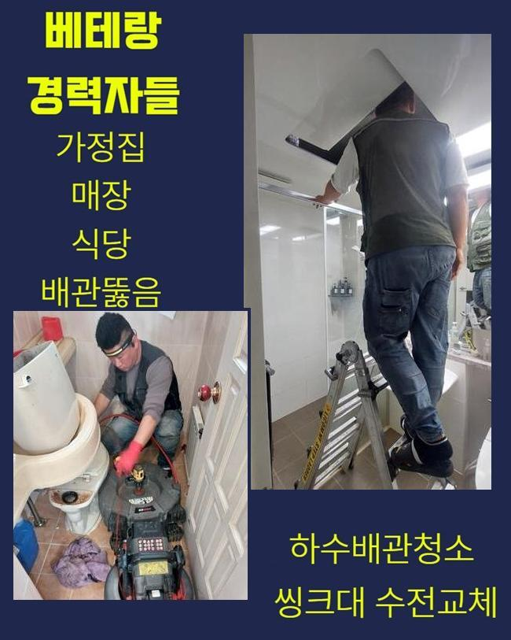
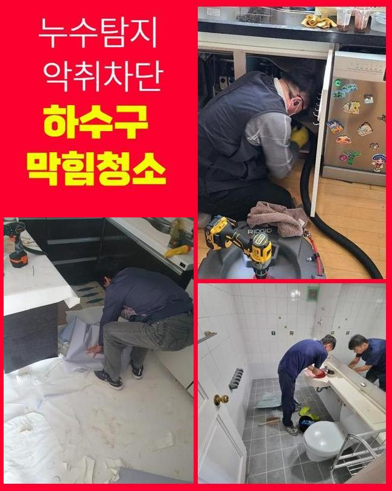
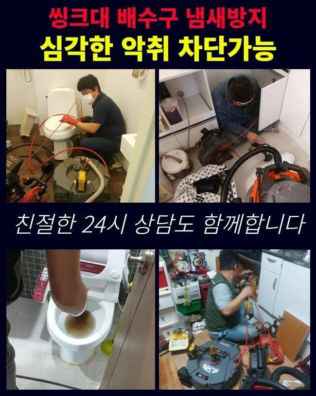
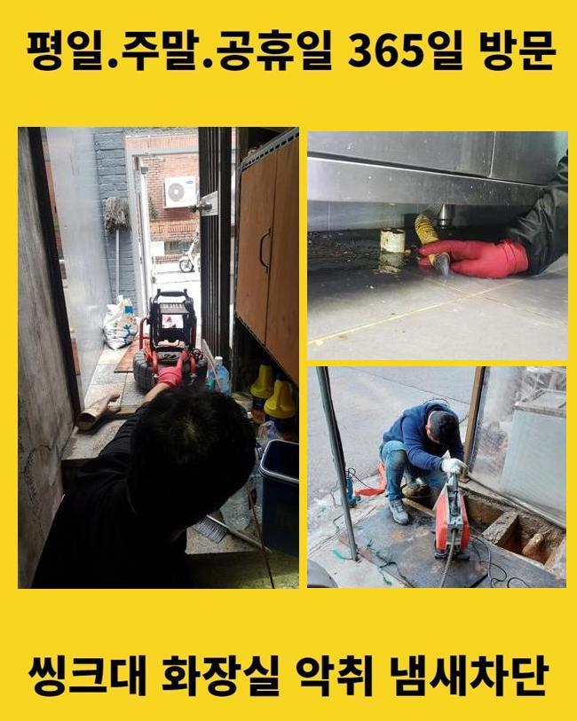
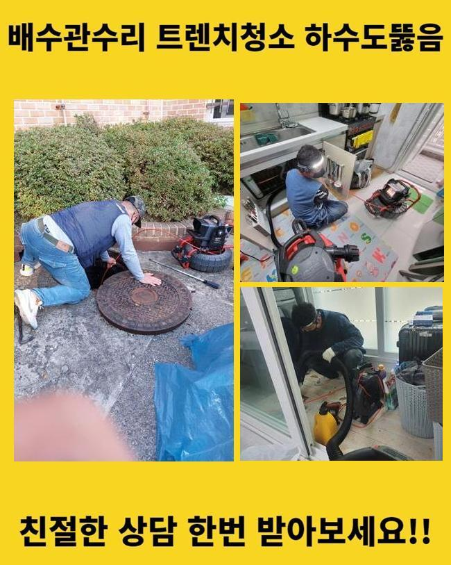
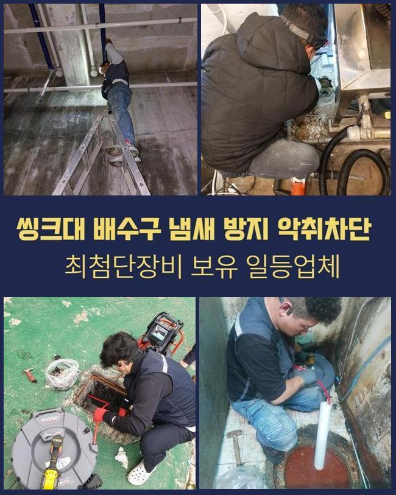

🏠 천안 삼룡동씽크대배수관막힘 목천읍 배관내시경카메라 통수전문
천안 싱크대막힘 전문 시공 후기

📋 작업 개요
- 위치: 천안
- 서비스 유형: 싱크대막힘, 변기막힘, 하수구막힘, 배관막힘, 누수수리, 역류해결, 뚫는업체, 배관청소, 고압세척, 악취차단
- 작업 일시: 2025. 5. 29. 16:59
- 업체명: 하수구수사대 (010-5615-2118)
🔍 문제 상황
천안 삼룡동씽크대배수관막힘 목천읍 배관내시경카메라 통수전문
하수도에 물이 안 흘러가면 극심한 불편감을 체감하게 됩니다
예시로 하나의 한 집 안의 싱크대가 잔뜩 오염돼서 하수의 이동이 중단되는 경우도 있으며 변기설비나 바닥 배수구 베란다 공간에 물이 쌓여서 이용에서의 어려움이 도래할 수 있는 부분입니다
아파트에 사시는 고객님께 요청이 들어온다면 개인 세대상의 오류라서 집 안쪽에서 장비들을 가동하여 뚫어냅니다
공통적으로 사용하는 관로라면 아파트 단지 차원에서는 결함이 없는지 검토하기 위하여 특정 일자를 설정해서 배관 속을 정리해주니 고장이 나는 일은 많이 보이는 건 아니에요
영업장이 자리한 빌딩이면 하수 문제가 나타날 가능성도 아파트와 비교해서는 대체로 높거든요
이번 막힘 케이스는 상가 건물 속에 있는 메인관로가 차단되어 성업 중인 매장들의 설비들이 다 중단되어서 빠른 개선이 필요하다며 문의를 넣어주셨습니다
현장을 둘러보았더니 문제소지가 있다고 보이는 메인관로이 있는 지점이 인지되어 착수했습니다
이 통로가 막힐 땐 가정집 안에 있는 가지배관의 오류로 판단하기 보다는 대형 배관 속에서 파손부가 일어났거나 이물질이 한껏 침투해서 배수 효율이 떨어졌을 확률이 더 높은 편이에요

🔎 원인 분석
💡 전문가 진단: 정밀 진단 장비를 사용하여 슬러지의 고착 여부를 판명하고 타격/세척 작업을 실시했습니다.
큰 흐름을 관장하는 관로부터 통로를 내고 규격이 더 축소된 관로로 이동하게 됩니다
높은 위치에 자리한 시설물이었기 때문에 아래에 사다리를 배치해서 시공하기로 결정했고 막혀있는 하수구의 처리를 도와줄 장치들을 키고 배치했습니다
진입부 청소를 완수해도 하단의 배관 파트는 아직 처치되지 못해서 메인 파이프를 관리할 때에는 파이프라인 전체를 빠짐없이 정리해줘야 합니다
파이프캡을 열고 협소하다면 타공도 추가해서 작업을 할 수 있는 상태로 세팅을 마칩니다
배관 용도로 만들어진 내시경기로 시선이 닿지 않는 배관 속의 현황을 관찰하기 시작했어요
얼만큼 마비가 됐는지 특정 구간에 막혀있을 그 존재에 대해서 장비 가동 직전에 판단해야 작업의 노선을 정할 수 있게 됩니다
메인관로가 다쳤다면 배관 자체의 규격이 넓은 편이기 때문에 단독주택처럼 간단한 건수에 찾아갔을 때 주로 구동하게 되는 석션장비로는 소용이 없습니다
호스 길이가 아래쪽까지 내려가기는 사실상 무리가 있고 흡입은 당연히 불가해요
기름덩어리를 쪼개어 스케일링하는 기능을 마무리 짓는 샤프트기도 단시간만에 완료되지 않으며 진입 홀을 다수 뚫어야해서 어려움이 있을 듯 했어요

🔧 작업 과정
상업시설 안의 하수구 소통이 원활하지 못하다면 빠른 세정에 들어가서 안정화를 시켜줘야 합니다
이럴 때는 강력한 파워로 촘촘하게 부착된 오염원들이 싹 쓸려나갈 수 있도록 세척함으로써 수로 내부를 티끌없는 상태로 조성해야 자꾸 막히는 사건들을 처치할 수 있습니다
관로에 여유공간이 전혀 없다면 내측을 치우기가 힘들어 질 수 있으니 우선 이물질을 수거하는 스프링기를 써서 봉인되어버린 파트를 틈이 나오도록 처리해서 순환이 되도록 조성한 후에 세부적인 하수구 정비를 시작하는게 낫겠다 싶었습니다
청소지점으로 장비를 내려보내려고 슬러지가 꽉 찬 부분에 숨통이 트이게 하는 경로를 확보했습니다
지금 소개하는 상가 건물은 상당히 다양한 외식업 업장들이 성황리에 운영 중이었고 그만큼 기름기도 많이 내부로 유입되고 모여서 하수구에 기름막이 코팅된 상황이었습니다
기름막은 뜨거운 물을 써도 영향을 덜 받기 때문에 쌓인지 오래될수록 석회화가 이뤄져서 접착력이 매우 뛰어난 방해요소가 되어버립니다
고착물이 되어버리기 전에 청소 시공을 수행하지 않고 장기간 가만히 둔다면 입구 부근에서부터 오염구간이 점차 확장돼서 경로가 완전히 차단돼서 하수 배출 자체가 전적으로 되지 않을지도 모릅니다
냄새까지 유발하는 슬러지들을 효율적으로 제거하려면 답은 최신식 고압세척기의 기능 덕택에 유연하게 번들대던 기름낀 배수로를 탈바꿈 시킬 수 있었습니다
지저분하게 접착된 물질이 세찬 물줄기로 인하여 떨어지고 잘게 분해되는 모습을 배관용 카메라를 이용해서 확인하며 잔여물 없이 정리했어요
움직임이 전혀 없었던 방대한 양의 물질들이 자취를 감추기 시작했으며 작은 입자만 겨우 잔여했더라고요
고압세척을 시행할 때는 상황에 따라 다를 수 있지만 의심되는 장애요소가 있는 곳들을 두루 긁어내야만 또다시 차단이 되는 등의 불상사가 일어나지 않습니다
오래된 기름덩어리를 고압의 물로 척결하고 아까 썼던 내시경으로 다양한 구간들을 탐색하며 나아졌는지 조명해보았습니다
하수도를 들여다봤던 초반 시점에는 빽빽하게 들이찼다 싶을만큼 오염이 됐었던 시설물이지만 다수의 기구들을 활용한 종합적인 절차 끝에 전과 딴판으로 변화한 쾌적함을 느낄 수 있었습니다
추가적 막힘이 있는지 보려고 물을 받아서 내려보면서 방해 없이 흘러나가는 전후 변화를 속시원하게 면밀하게 검토한 이후에야 시공의 마무리를 안내해드렸습니다


✅ 작업 완료
아까 장비를 배치하기 위해서 구멍을 냈던 입구들은 윗부분을 커버해줄 테이프로 꼼꼼하게 덮어서 누수 상황이 벌어지지 않게 단속까지 마쳤습니다
이번 현장은 막힘건으로 여러 문제를 낳았던 상가 내의 업장에서 물이 전혀 이동하지 못하고 거기다 싱크대 역류까지 나타났던 상황을 처리하고 고객님 댁을 떠났습니다
배관의 폭이 크다면 쉬운 방식으로 낫기 어려운 문제인 만큼 섣부르게 자가조치를 무분별하게 취하다간 수도관이 균열이 가거나 부서지는 상황들도 꽤 됩니다
주택 아파트 거주지면 어디든 특수한 공간이나 상업시설이라도 적절한 원인 분석과 시공으로 말끔히 손봐드리고 있사오니 믿고 맡겨주시면 감사드리겠습니다!




⚠️ 베란다 누수 및 방수 관리 방법
- ✅ 비가 많이 올 때 창틀 주변이나 아래층 천장에 얼룩이 생기는지 정기적으로 확인해 보세요.
- ✅ 우수관 주변 실리콘 마감이 들뜨거나 깨진 틈새가 있는지 손상 여부를 수시로 체크하세요.
- ✅ 베란다 바닥 타일의 줄눈(메지)이 소실되면 그 틈으로 물이 침투하여 누수가 유발됩니다.
- ✅ 누수 의심 증상 발견 시 방치하면 아래층 손실이 커지므로 즉시 전문가의 진단을 받으십시오.
💡 핵심 정리
- 확실한 장비 작업(내시경 점검 및 샤프트 스케일링)으로 원인을 뿌리 뽑습니다.
- 작업 후 1년 이내에 동일한 부위 재발 시 100% 무상 A/S 서비스를 보장합니다.
- 서울 · 경기 · 인천 전 지역에 24시간 언제든 긴급 출동할 수 있도록 항시 대기 중입니다.
❓ 자주 묻는 질문 (FAQ)
🚨 천안 싱크대막힘 문제로 고민이신가요?
정확한 원인 진단과 확실한 시공으로 재발 없는 해결을 약속드립니다.
24시간 긴급 출동 | 서울 · 경기 · 인천 전지역 | 1년 내 재발 시 무상 A/S